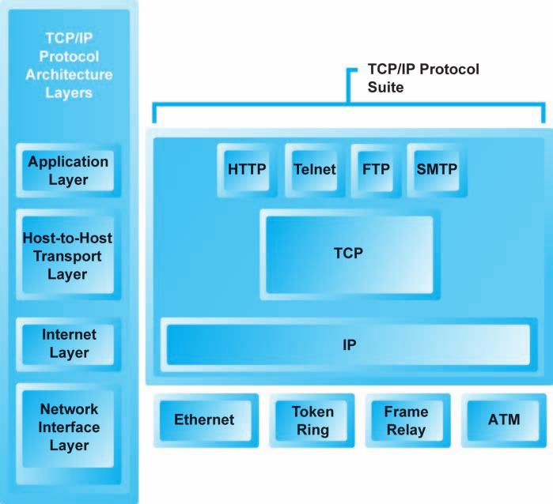

Υποδομή του Η.Ε. Το Internet, το Web, και η πλατφόρμα Mobile
Έννοιες
Η ανάπτυξη του internet σε 3 φάσεις:
- Φάση καινοτομίας (1961 - 1974). Σύνδεση ερευνητών σε εθνικό επίπεδο.
- Φάση χρηματοδότησης (1975 - 1995). Υπουργείο Άμυνας, και δημόσιο αγαθό στη συνέχεια.
- Φάση εμπορικοποίησης (1995 - ), Εκμετάλλευση του διαδικτύου για εμπορικούς σκοπούς.
Τεχνολογίες κλειδιά πίσω από το Internet
- Packet switching, packets
- Router, Routing algorithm
- Transmission Control Protocol/Internet Protocol (TCP/IP)

- IP Addresses (IPv4 Internet address, IPv6 Internet address)
- Domain name (IP address εκφρασμένη σε φυσική γλώσσα)
- Domain Name System (DNS) (αντιστοιχεί IP διευθύνσεις με Domain names)
- Uniform Resource Locator (URL) (καθορίζει την ακριβή θέση ενός αρχείου στο web)
- Client/Server τεχνολογία

- Cloud computing

- HyperText Transfer Protocol (HTTP) (Το πρωτόκολο για τη μεταφορά ιστοσελίδων)
- Simple Mail Transfer Protocol (SMTP)
- Post Office Protocol 3 (POP3)
- Internet Message Access Protocol (IMAP)
- File Transfer Protocol (FTP)
- Telnet
- Secure Sockets Layer (SSL)/Transport Layer Security (TLS)
- Packet InterNet Groper (Ping) (ping www.yahoo.gr)
- Tracert, Traceroute
Το Internet του μέλλοντος
Το internet εμφανίζει τις αδυναμίες του καθώς οι απαιτήσεις αυξάνονται τόσο σε ποσότητα όσο και σε ποιότητα.
- Bandwidth limitations
- Quality of service limitations
- Network architecture limitations
- Wired Internet
Internet2
The Internet of Things
Πως λειτουργεί το web
Οι έννοιες κλειδιά:
- Hypertext
- HTTP
- URLs
- HTML(5)
- XML
- Web server software
- Web clients
- Web browsers
The Internet of Things
The Internet of Things (IoT) είναι το δίκτυο φυσικών αντικειμένων "things" ενσωματωμένα με ηλεκτονικά, λογισμικό, αισθητήρες και συνδεσιμότητα στο δίκτυο που επιτρέπει σε αυτά τα αντικείμενα να ανταλλάσουν δεδομένα.
Το IoT επιτρέπει την απομακρυσμένη "αίσθηση" των αντικειμένων ή πραγμάτων.
Κάθε πράγμα είναι μοναδικά ταυτοποιημένο στο δίκτυο ή διαδίκτυο και του επιτρέπεται να αλληλεπιδρά με την υποδομή του διαδικτύου.
Οι ειδικοί εκτιμούν ότι μέχρι το 2020 θα είναι συνδεδεμένα 50 δις αντικείμενα.
Η ολοκλήρωση με το διαδίκτυο σημαίνει ότι τα αντικείμενα ή συσκευές πρέπει να χρησιμοποιούν μια διεύθυνση IP. Λόγω του μεγάλου όγκου θα πρέπει να χρησιμοποιηθεί το IPv6.
Πεδία εφαρμογών
- Media (Μέσα) Στόχος είναι η στοχευμένη αποστολή μηνυμάτων, ειδήσεων και γενικά περιεχομένου σε ελεγχμένο χρόνο και τόπο (όπου ο λήπτης βρίσκεται).
- Environmental monitoring (Περιβάλλον). Συστηματική παρακολούθηση περιβαλλοντικών στοιχείων όπως νερό, αέρας, έδαφος, σεισμοί, τσουνάμι κλπ.
- Infrastructure management (Υποδομές). Παρακολούθηση κατασκευών όπως γέφυρες, λιμάνια κλπ.
- Manufacturing (Βιομηχανία)
- Energy management (Ενέργεια)
- Medical and healthcare systems (Υγεία)
- Building and home automation (Αυτοματισμοί κτιρίων, οικιών)
- Transportation (Μεταφορές)
- Large scale deployments (Μεγάλης κλίμακας εγκαταστάσεις όπως πόλεις)